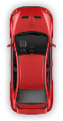

Paul's life

1973
Paul was born in glendale.
1975
First time on tv in a pampers commercial. He was only 2 at the time.
1998
Paul became father he was not married at the time.
2001
Paul received the Hollywood Breakthrough Award. Also did his first Fast and the Furious movie in 2001.
2013
Paul got killed in a car accident.